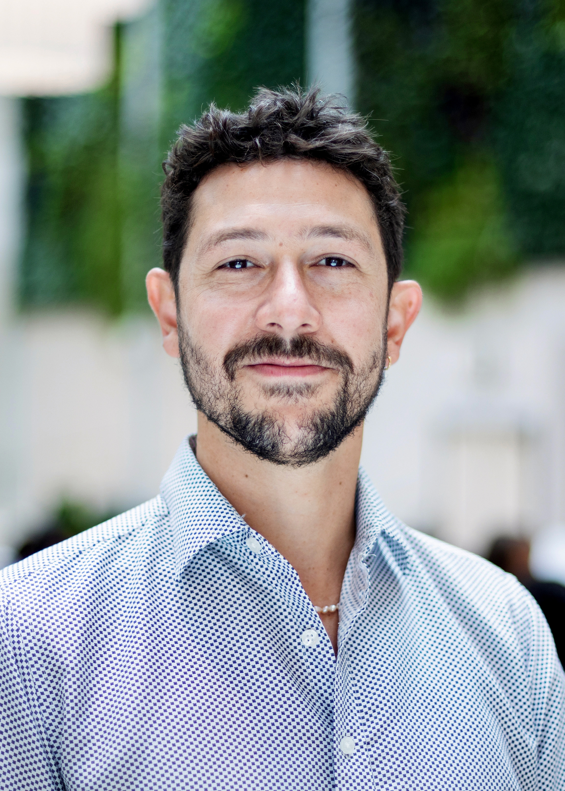
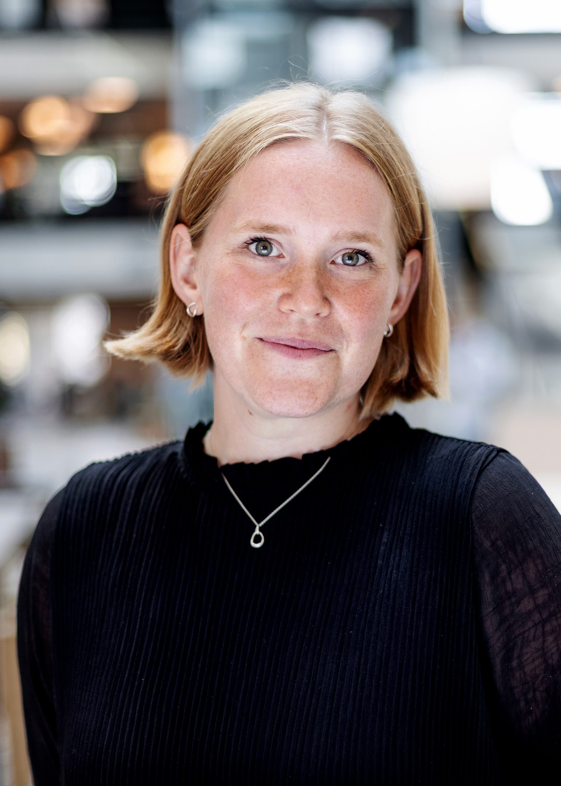
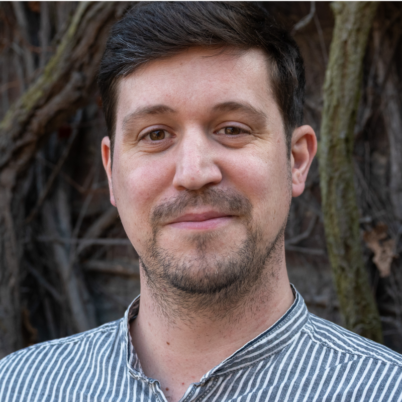
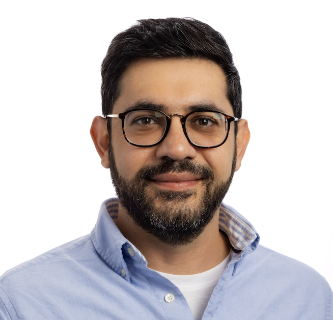

About the School
Artificial intelligence is reshaping how science is conducted, how innovation unfolds, and how policy is designed and evaluated. For researchers working at the intersection of science, technology, and innovation (STI), engaging professionally and critically with AI is becoming essential. Specfically, not only as a topic of inquiry, but as a practical research tool and a subject of governance concern.
The EU-SPRI Autumn School on Responsible AI for Science, Technology, Innovation, and Policy is a one-week intensive training programme for PhD candidates and early-career researchers (ECRs). Hosted at the Center for Innovation Research (CIRCLE) at Lund University in Lund, Sweden, the School offers a structured, hands-on introduction to AI in contemporary STI research — integrating conceptual, methodological, and ethical dimensions.
The School is jointly organized by EU-SPRI, CIRCLE, Lund University and VTT Technical Research Centre of Finland, with the participation of additional partner institutions. For a sense of what to expect, see insights from the 2023 EU-SPRI ECR School on AI, Science, Policy, and Ethics.
Three Perspectives on AI
The programme is structured around three complementary lenses:
AI as a Research Tool
Hands-on experience with machine learning, NLP, topic modelling, semantic analysis, automated coding, LLMs, and generative AI for social science tasks. Lab sessions are designed to be accessible without prior programming experience.
AI as an Object of Inquiry
How AI technologies shape innovation processes, entrepreneurship, industrial dynamics, scientific production, and policy design, also within regional and institutional contexts.
AI as a Socio-Technical System
The ethical, societal, and regulatory dimensions of AI: transparency, fairness, bias, sustainability, interpretability, and responsible research practice — developing the vocabulary to contribute to evidence-based policy discussions.
What You Will Learn
The Autumn School is designed to leave participants with durable, practical skills and conceptual tools they can immediately apply in their own work. By the end of the week, participants will be able to critically assess AI systems and methods from an STI perspective, design and implement basic AI-assisted research workflows, and engage confidently with questions of AI governance, ethics, and responsible use in academic and policy contexts.
A dedicated methods and lab track moves from fundamentals to hands-on application — covering data collection, preprocessing, model building, and the responsible communication of AI-derived findings. Senior scholars provide direct feedback on participants' own ongoing research, offering a rare opportunity to stress-test ideas and receive expert input in an international setting.
Group Research Project: Working in interdisciplinary groups, participants collaboratively develop a short research proposal applying AI to an STI challenge. The proposal is evaluated by a jury of senior scholars and practitioners in a simulated funding panel — providing formative feedback and a concrete output that can serve as the foundation for future grant applications or ongoing collaborations.
What You Take Home
- Practical skills in AI methods directly applicable to STI research
- Critical understanding of AI governance, ethics, and innovation policy
- Hands-on coding experience — run your own AI models and pipelines
- Personal feedback from senior scholars on your own research
- A co-authored research proposal ready for future funding applications
- Lasting connections with an international cohort of STI researchers
- Entry point into the CIRCLE and EU-SPRI research networks
Who Should Apply
The School welcomes applications from PhD students and early-career researchers from all disciplines with an interest in AI and its intersections with science, technology, and innovation. We actively seek a diverse cohort — both quantitative and qualitative researchers, and both those with and without prior technical experience in AI. Prior coding or AI skills are not required. What matters is motivation to engage with these topics and a willingness to learn.
ECRs should be within five years of PhD graduation. All applicants must be registered in a doctoral programme or hold a completed PhD. The programme is conducted in English, and applications from international scholars are strongly encouraged.
No tuition fee. Accommodation covered. Travel costs normally covered by home institution.
Programme participation fee.
Organising Team
-
VM

Vinicius Muraro CIRCLE, Lund UniversityVinicius Muraro
Researcher at the Centre for Innovation Research (CIRCLE), Lund University. His work focuses on science, technology, and innovation studies, with a particular interest in AI-driven research methods.
-
SJ

Sigrid Jessen CIRCLE, Lund UniversitySigrid Jessen
Researcher at the Centre for Innovation Research (CIRCLE), Lund University, contributing to the design and coordination of the EU-SPRI Autumn School programme.
-
PS

Philipp Stark CIRCLE, Lund UniversityPhilipp Stark
Researcher at the Centre for Innovation Research (CIRCLE), Lund University. His research sits at the intersection of responsible AI, innovation policy, and STI studies.
-
AH

Arash Hajikhani VTT Technical Research Centre of FinlandArash Hajikhani
Researcher at VTT Technical Research Centre of Finland, specialising in AI, data science, and innovation analytics applied to science and technology policy.
How to Apply
To apply, please prepare and submit the following three documents:
- Application statement — describing your motivation for attending, how the School relates to your current research and career development, and an overview of your research project and data sources
- CV — current curriculum vitae
- Writing sample — an example of academic writing
For questions, please contact the organising team at CIRCLE, Lund University.